\gdef\Set{\mathrm{\mathbf{Set}}}
\gdef\Hask{\mathrm{\mathbf{Hask}}}
\gdef\Vect{\mathrm{\mathbf{Vect}}}
\gdef\Mon{\mathrm{\mathbf{Mon}}}
\gdef\id{\mathrm{id}}
\gdef\Id{\mathrm{Id}}
\gdef\map{\mathrm{map}}
\gdef\op#1{{#1}^{\mathrm{\scriptsize op}}}
\gdef\listof#1{\left\lbrack{#1}\right\rbrack}まえがき
先日、Witherable という型クラスについての理論的な面からの紹介を、Twitterにて投稿しました1。 これをちゃんと記事にします。
FilterableとWitherable
witherableパッケージでは、FilterableとWitherableという二つの型クラスが提供されています。
この2つのクラスはいったい何で、どういったことができるのか見ていきます。
Filterableの概要
-- Witherable.hsより抜粋
class Functor f => Filterable f where
mapMaybe :: (a -> Maybe b) -> f a -> f b
mapMaybe f = catMaybes . fmap f
catMaybes :: f (Maybe a) -> f a
catMaybes = mapMaybe id
filter :: (a -> Bool) -> f a -> f a
filter f = mapMaybe $ \a -> if f a then Just a else Nothing
-- mapMaybe か catMaybes のどちらか一方が必須
{-# MINIMAL mapMaybe | catMaybes #-}Filterableは、その名のとおりfilter関数filter :: (a -> Bool) -> [a] -> [a]や、
filterより少し強力な機能を持つmapMaybe :: (a -> Maybe b) -> [a] -> [b]を、
リスト以外のコレクション型に一般化する型クラスです。
リストのmapMaybeがmapの代わりにもfilterの代わりにもなることを反映して、
Filterableなコレクション型はすべてFunctorでもあることが求められています。
（つまり、Filterableの親クラスとしてFunctorがあります。）
まずはFilterableのインスタンスにはどのようなものがあるのかを見てみましょう。
頻繁に使うコレクション型には、すでに（別の名前空間の下で）mapMaybeと名のつく関数があるので、
Filterableはその関数を使うだけです。
import qualified Data.Vector as V
import qualified Data.Map as M
instance Filterable [] where
mapMaybe = Data.Maybe.mapMaybe
instance Filterable Vector where
mapMaybe = V.mapMaybe
instance Filterable (Map k) where
mapMaybe = M.mapMaybeまた、一見コレクション型には見えないものにもmapMaybeが適用できることがあります。
import Data.Functor.Const(Const(..))
-- | MaybeもFilterableになれる。「長さが0か1のリスト」とみなした場合に一致
instance Filterable Maybe where
-- Filterable MaybeはMaybeモナドを使って定義できます！
mapMaybe :: (a -> Maybe b) -> Maybe a -> Maybe b
mapMaybe = (=<<)
catMaybes :: Maybe (Maybe a) -> Maybe a
catMaybes = join
-- | (Const c)も「要素がゼロ個しか入らないコンテナ」としてFilterableになれる
instance Filterable (Const c) where
mapMaybe :: (a -> Maybe b) -> Const c a -> Const c b
mapMaybe _ (Const c) = Const cWitherableの概要
Witherableは、言うなれば「副作用のあるmapMaybe」をするためのクラスで、
そのためのメソッドwitherを持っています。以下に定義を示します。
class (Traversable t, Filterable t) => Witherable t where
wither :: Applicative f => (a -> f (Maybe b)) -> t a -> f (t b)
-- 必須でないメソッドをいくつか省略例えば、次のような場合にwitherが使えます。
-- | 50%の確率で、ランダムに Just a か Nothing のどちらかを返す
coinToss :: a -> IO (Maybe a)
-- | 50%の確率でランダムに要素を削除する
randomDrop :: Witherable t => t a -> IO (t a)
randomDrop = wither coinTossこれは、TraversableクラスがFunctorクラスに対して、
「副作用のあるfmapをする」とでも言うべき2traverseメソッドを持っていることに似ています。
Functor、Traversable、FilterableとWitherableの関係を図にすると以下のようになります。
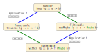
さて、Witherableが何をするクラスなのかを説明しましたが、
ここである疑問が湧いてきた方も居るかもしれません。
Witherableは本当に必要なのか？
なぜかというと、あらゆるTraversableかつFilterableなコレクション型に対して使える、
汎用のwitherの定義があるからです。
witherDefault :: (Traversable t, Filterable t, Applicative f)
=> (a -> f (Maybe b)) -> t a -> f (t b)
witherDefault f = fmap catMaybes . traverse fもちろんHaskellのプログラムとしての効率（速度・メモリ使用）
の面からいって、各コレクション型に特化したwitherを用いる意味があるため、
Witherableクラスの必要性は否定できません。しかし、
効率を無視して純粋に何ができるかだけ考えたときに、Witherableというクラスを設ける必要性はあるのでしょうか？
しかも、Witherableクラスには上記のwitherDefaultがデフォルトの実装として採用されており、
手動で書かないといけない関数はひとつもありません。ますます疑念がわいてきます。
ですが、よくよく調べてみると、
WitherableはTraversable + Filterableとまったく同じではないことが分かります。
witherDefaultは、どんなTraversableかつFilterableな型tに対しても使えますが、
「Witherableのwither」には、Witherable則によって追加の保証がなされています。
つまり、witherが満たすべき性質を、witherDefaultでは保証できないことがあるのです。
次の節から、具体的にはどういうことなのか説明します。
Traversableのおさらい
準備として、Traversableクラスと、そのTraversable則についておさらいしておきます。
class (Functor t, Foldable t) => Traversable t where
{-# MINIMAL traverse | sequenceA #-}
traverse :: Applicative f => (a -> f b) -> t a -> f (t b)
traverse f = sequenceA . fmap f
sequenceA :: Applicative f => t (f a) -> f (t a)
sequenceA = traverse idTraversableは、traverseまたはsequenceAのどちらかを与えることで定義できます。
どちらを基準にしてもよいのですが、ここではsequenceAの方で定義されているとしましょう。
sequenceAは「tとfの合成関手の間の自然変換」という型を持つため、以下のようにストリング図3で表現しやすいのです。
図を見やすくするため、この記事を通して、
ストリング図中ではsequenceAのことをギリシャ文字デルタ(\delta)一文字で表記することにします。
また、本来は小文字で書いていたtやfといった関手の名前も、大文字でTのように書いてしまいます。
Traversable則を定義するやりかたはいくつかありますが、
標準ライブラリのドキュメントData.Traversable
における定義がそのままで便利です。
- Naturality
-
全てのアプリカティブ準同型
tに対してt . sequenceA = sequenceA . fmap t - Identity
-
sequenceA . fmap Identity = Identity -
Composition
-
sequenceA . fmap Compose = Compose . fmap sequenceA . sequenceA
ここで、アプリカティブ準同型とは、以下の関数
t :: (Applicative f, Applicative g) => f a -> g aで、アプリカティブの演算を保つものです。つまり以下の等式が成り立ちます。
t (pure x) = pure x
t (f <*> x) = t f <*> t xまた、恒等関手Identityと関手の合成Composeはそれぞれ
Data.Functor.Identityと
Data.Functor.Composeです。
これをストリング図に描いたものが以下になります。
Filterableの理論
Filterableは「mapMaybeに似ている関数」をまとめたものでした。
しかし、(a -> Maybe b) -> t a -> t bという型をした関数を何でもmapMaybeに当てはめていいとすると、
それが本当にリストとの類推ができるような操作なのかは分かりません。
そこで、Functor則やApplicative則のように、Filterable則が決められています。
- Conservation（保存則）
-
mapMaybe (Just . f) = fmap f - Composition（合成則）
-
mapMaybe f . mapMaybe g = mapMaybe (f <=< g)
ストリング図への描きやすさから、Filterable則をmapMaybeの代わりにcatMaybesで表現し直しておきます。
まず、mapMaybeとcatMaybesは互いに定義可能でした。
-- (再掲)
class Functor f => Filterable f where
mapMaybe :: (a -> Maybe b) -> f a -> f b
mapMaybe f = catMaybes . fmap f
catMaybes :: f (Maybe a) -> f a
catMaybes = mapMaybe idcatMaybesで表現したFilterable則は以下のようになります。
これが実際にmapMaybeでの表現と同値であることは各自お確かめ下さい。
- Identity(単位則)
-
catMaybes . fmap Just = id - Composition(合成則)
-
ここでcatMaybes . catMaybes = catMaybes . fmap joinjoinはMaybeのMonad演算join :: Maybe (Maybe a) -> Maybe a
これをストリング図に書くと以下のようになります。
ただし、sequenceAを描くときに\delta一文字に略したように、
ストリング図中では次の記法を使うことにします。
MaybeはPと略します。catMaybes :: t (Maybe a) -> t aは、3本の線（上にPとT、下にT）が出ている○で表します。
脱法Filterable
Filterable則の定式化は単純で理論的にもきれいです4。しかし、
Filterableという名前からは少し意外な振る舞いをするインスタンスも存在します。
例えば、次のU型は、0個か2個の要素を持つコンテナ型で、
2個の要素のうち片方がNothingになると、もう片方も”連帯責任”で削除されてしまいます。
data U a = U0 | U2 a a
deriving (Show, Eq, Functor, Foldable, Traversable)
-- DeriveTraversable拡張を使用
instance Filterable U where
catMaybes :: U (Maybe a) -> U a
catMaybes (U2 (Just x) (Just y)) = U2 x y
catMaybes _ = U0このような変なふるまいをするcatMaybesでも、Filterable則を満たすれっきとしたインスタンスです。
Identity
catMaybes . fmap Just = idua :: U aとしたとき、catMaybes . fmap Just $ ua = uaを確認する。-- ua = U0 の場合 catMaybes . fmap Just $ U0 = catMaybes U0 = U0 -- ua = U2 x y の場合 catMaybes . fmap Just $ U2 x y = catMaybes $ U2 (Just x) (Just y) = U2 x yComposition
catMaybes . catMaybes = catMaybes . fmap joinumma :: U (Maybe (Maybe a))としたとき、catMaybes (catMaybes umma) = catMaybes (fmap join umma)を確認する。-- umma = U0 の場合 catMaybes . catMaybes $ U0 = catMaybes U0 = U0 catMaybes . fmap join $ U0 = catMaybes U0 = U0 -- umma = U2 mmx mmy -- mmx = Just mx, mmy = Just my の場合 catMaybes . catMaybes $ U2 (Just mx) (Just my) = catMaybes $ U2 mx my catMaybes . fmap join $ U2 (Just mx) (Just my) = catMaybes $ U2 (join (Just mx)) (join (Just my)) = catMaybes $ U2 mx my -- mmx, mmyのどちらかがNothingの場合 catMaybes . catMaybes $ U2 mmx mmy = catMaybes U0 = U0 catMaybes . fmap join $ U2 mmx mmy = catMaybes $ U2 (join mmx) (join mmy) {- join mmx, join mmyのどちらかはNothingなので -} = U0
また違った振る舞いのインスタンスも定義できます。
今度は、2要素のうち片方だけがNothingになると、もう片方の要素をコピーして2要素を保ちます。
data V a = V0 | V2 a a
deriving (Show, Eq, Functor, Foldable, Traversable)
-- DeriveTraversable拡張を使用
instance Filterable V where
catMaybes :: V (Maybe a) -> V a
catMaybes V0 = V0
catMaybes (V2 Nothing Nothing) = Zero
catMaybes (V2 Nothing (Just y)) = V2 y y
catMaybes (V2 (Just x) Nothing) = V2 x x
catMaybes (V2 (Just x) (Just y)) = V2 x yIdentity
catMaybes . fmap Just = idva :: V aとしたとき、catMaybes . fmap Just $ va = vaを確認する。-- va = V0 の場合 catMaybes . fmap Just $ V0 = catMaybes V0 = V0 -- va = V2 x y の場合 catMaybes . fmap Just $ V2 x y = catMaybes $ V2 (Just x) (Just y) = V2 x yComposition
catMaybes . catMaybes = catMaybes . fmap joinvmma :: V (Maybe (Maybe a))としたとき、catMaybes (catMaybes vmma) = catMaybes (fmap join vmma)を確認する。-- vmma = V0 の場合 catMaybes . catMaybes $ V0 = catMaybes V0 = V0 catMaybes . fmap join $ V0 = catMaybes V0 = V0 -- vmma = V2 Nothing Nothing の場合 catMaybes . catMaybes $ V2 Nothing Nothing = catMaybes V0 = V0 catMaybes . fmap join $ V2 Nothing Nothing = catMaybes $ V2 Nothing Nothing = V0 -- vmma = V2 (Just mx) (Just my) の場合 catMaybes . catMaybes $ V2 (Just mx) (Just my) = catMaybes $ V2 mx my catMaybes . fmap join $ V2 (Just mx) (Just my) = catMaybes $ V2 mx my -- vmma = V2 (Just mx) Nothing の場合 catMaybes . catMaybes $ V2 (Just mx) Nothing = catMaybes $ V2 mx mx catMaybes . fmap join $ V2 (Just mx) Nothing = catMaybes $ V2 mx Nothing -- ここで mx で場合分けする -- Nothing -> 両辺ともV0 -- Just x -> 両辺ともV2 x x -- vmma = V2 Nothing (Just my) の場合も -- xとyを入れ替えただけで同様
こうした奇妙なインスタンスが禁止されるような、より厳しい法則は考えられないでしょうか？
実は、Filterableだけを使ってもうまくいきません5。
そのため、FoldableやTraversableの機能をも使って、厳しい法則を定めてみましょう。
上記のUやVがcatMaybesとして「ふさわしくない感じがする」理由の一つとして、
存在する要素の個数がcatMaybesによって変わってしまうという点がありそうです。
この「要素の個数」というのはFoldableの機能です。「要素の個数が変わらない」を定式化してみましょう6。
-- Filterableのより強い法則（候補1）:
length' . catMaybes = countJusts
where
-- Int の代わりに Sum Int を返す length
length' :: (Foldable t) => t a -> Sum Int
length' = Sum . length
= foldMap (const 1)
countJusts :: (Foldable t) => t (Maybe a) -> Sum Int
countJusts = foldMap length' -- このlength' は Maybe a -> Sum Int
-- (Justなら1, Nothingなら0)
-- 補助的な関数を使わずに書くなら：
foldMap (const 1) . catMaybes = foldMap (foldMap (const 1))UもVもこの法則候補1を満たすことができませんね！
もう少し強い要請として、「要素だけをリストに取り出したもの」がcatMaybesによって変わらない、というものも考えられます。
-- Filterableのより強い法則（候補2）:
toList . catMaybes = concatMap toList :: t (Maybe a) -> [a]
-- concatMapもtoListもfoldMapの特別な場合です。
-- concatMap = foldMap :: (Foldable t) => (a -> [b]) -> t a -> [b]
-- toList = foldMap singleton
-- where singleton a = [a]
-- 代入して foldMap だけで表現すると以下のようになります。
foldMap singleton . catMaybes = foldMap (foldMap singleton)これらを統合して、foldMapがcatMaybesで変わらない、としてもよいでしょう。
-- Filterableのより強い法則（候補3）:
foldMap f . catMaybes = foldMap (foldMap f)今考えているFilterableなコンテナ型はFunctorでもありました。
ここではさらにFoldableでもあるものを考えています。
FunctorかつFoldableならば、
その両方を親クラスに持つTraversableであってもおかしくないでしょう7。
foldMapがtraverse/sequenceAで実装できることを思い出すと、
（候補3）のTraversable版は以下のようになります。
-- Filterableのより強い法則：
traverse f . catMaybes = fmap catMaybes . traverse (traverse f)
-- sequenceAで表現するならば：
sequenceA . catMaybes = fmap catMaybes . sequenceA . fmap sequenceAこの法則にはDistributivityという名前を付けることにします。
Distributivityから（候補1）〜（候補3）が導けるので、
UやVはFilterableかつTraversableでありながら、
Distributivityを満たさないような具体例となっています。
絵も描いておきます。
ただし、これまでの略記法
MaybeをPと書くcatMaybesを○で表すsequenceAを\deltaと書く
をフル活用しています。\delta_PはMaybeに対するsequenceAのことです。
Witherableの理論
この記事のはじめのほうでWitherableの定義と使い方を説明し、「WitherableはFilterableとTraversableの組み合わせに過ぎないのではないか？」という疑問を取り上げました。
繰り返しになりますが、実はWitherableはFilterable+Traversableより厳しい制限が課せられているのです。この制限はWitherable則として表されています。
Witherableの定義を再掲します。
class (Traversable t, Filterable t) => Witherable t where
wither :: Applicative f => (a -> f (Maybe b)) -> t a -> f (t b)Witherable則はwitherを使って記述されていますが、
今後の事情のために（traverseに対してsequenceAを使ったように）以下の
\omegaという関数を代わりに使うことにします。
\omegaからwitherを、逆にwitherから\omegaを定義できるので、どちらを使ってもいいはずです。
ω :: (Witherable t, Applicative f) => t (f (Maybe a)) -> f (t a)
ω = wither id
wither :: (Witherable t, Applicative f) => (a -> f (Maybe b)) -> t a -> f (t b)
wither f = ω . fmap fこれをストリング図に描くと以下のようになります。
\omegaを使ったWitherable則は以下のようになります。
- Naturality(自然性)
-
全てのアプリカティブ準同型
tに対してt . ω = ω . fmap t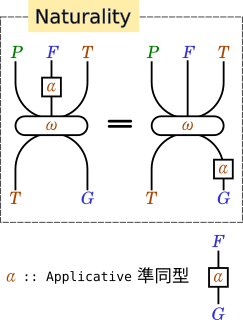 - Identity(単位則)
-
ω . fmap Identity . fmap Just = Identity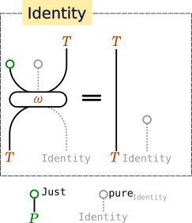 - Composition(合成則)
-
Compose . fmap ω . ω = ω . fmap (Compose . fmap ω_P)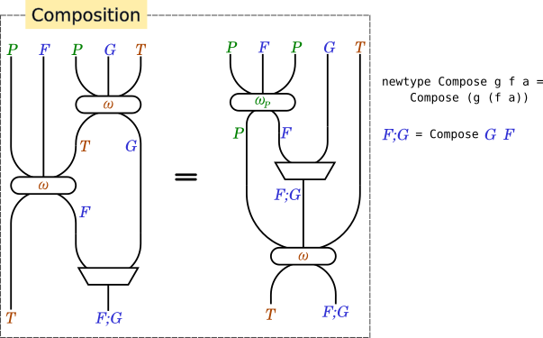 ただし、\omega_Pは
Maybeに対する\omegaで、 以下のように定義される。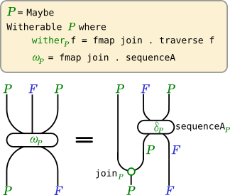
Witherable は Filterable+Traversable ではない
Witherableとその法則は上記のように定義されています。
このとき、Witherable tはFilterable tかつTraversable tかつtがDistributivityを満たすことと同値になることが証明できます。
（Distributivityが本当に追加の条件であってFilterable則やTraversable則から導けないことは、上記のUやVが存在することからわかります。）
次のcatMaybesDefaultによって、
WitherableはFilterableの機能を併せ持つ上位互換であることがわかります。
catMaybesDefault :: Witherable t => t (Maybe a) -> t a
catMaybesDefault = runIdentity . ω . fmap IdentityFilterable則もWitherable則から証明できます。
Identity(単位則)
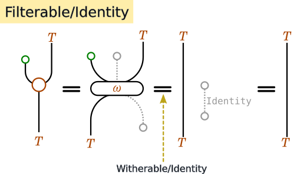Composition(合成則)
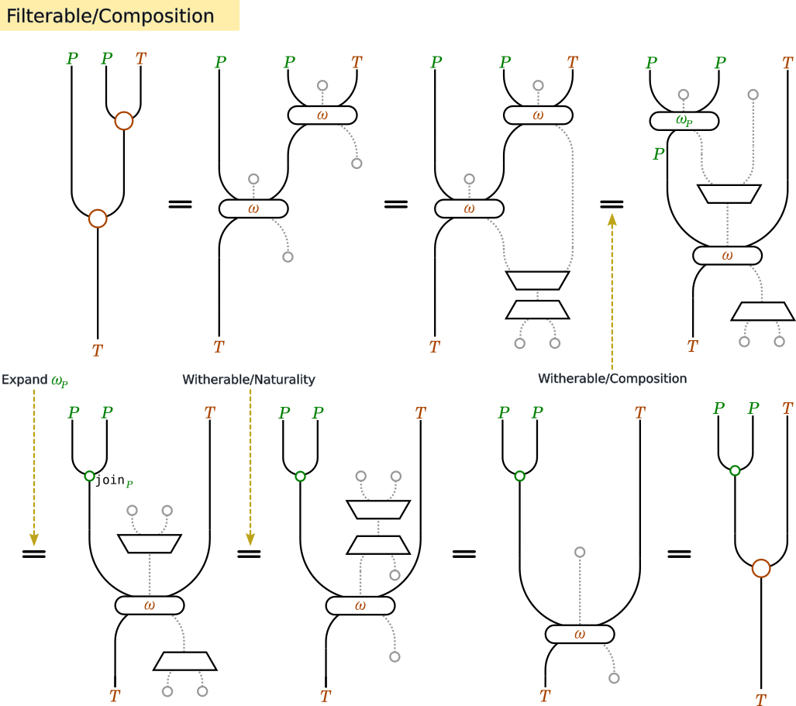同じようにWitherableはTraversableの機能も併せ持ち、
Traversable則はWitherable則から証明できます。
sequenceADefault :: (Witherable t, Applicative f) => t (f a) -> f (t a)
sequenceADefault = ω . fmap (fmap Just)Naturality(自然性)
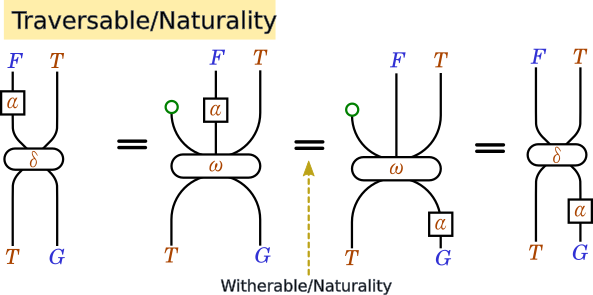Identity(単位則)
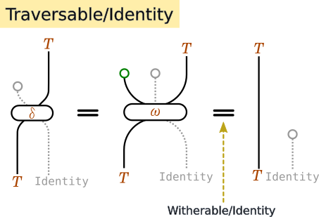Composition(合成則)
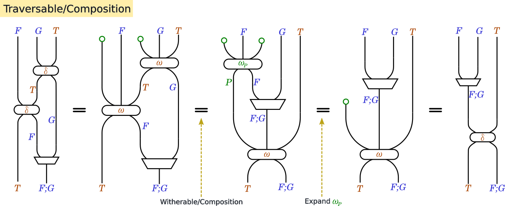さらに、catMaybesDefaultとsequenceADefaultの2つから、
ωを復元できます。
ω = fmap catMaybes . sequenceA
そして最後に、Witherableから取り出したFilterableとTraversableは、
Distributivity――先程定義した、「変な」Filterableを除外する法則――を満たすことが証明できます。
証明
つまり、Witherableは少なくともFilterableかつTraversableかつDistributivityをもつような型クラスです。
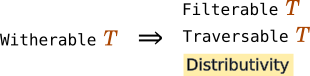
逆に、FilterableかつTraversableかつDistibutivityをもつならば、witherDefaultがWitherable則を満たすことも示せ、結果として同値性が分かります。
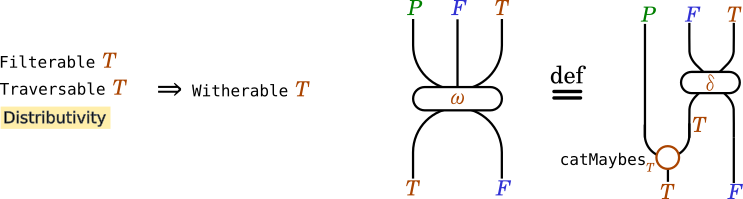
証明
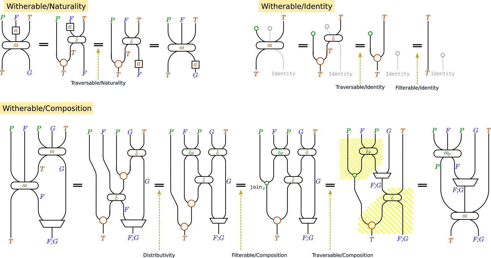結論
WitherableはFilterableとTraversableの両方の機能をもち、この2クラスに「脱法Filterable封じのDistributivity則」を合わせたものと同値で、
それをwitherと3つのWitherable則で表したものでした！
人によっては、副作用のある
fmapと言ったら mapMの方を思い出すかもしれません。 実のところtraverseとmapMは兄弟みたいなものです。↩︎fmap :: (a -> b) -> t a -> t b traverse :: Applicative f => (a -> f b) -> t a -> f (t b) mapM :: Monad m => (a -> m b) -> t a -> m (t b)Filterable fは、簡潔に「fはKleisli Maybeから->への関手である」 と表現されることもあり、Filterable則は関手の従うべき単位則と合成則を言い直したものに相当します。 今回の記事とはあまり関係しない論点ですが、過去の投稿で何度か触れております： 型クラスAlignについて 随伴から作られるMonad(準備編)↩︎某所で議論があり、「うまくいかない」というのは技術的に微妙なポイントなのですが、 あまり整理されていないかつ口論が混じっている会話なのでリンクはしません↩︎
Sumは Data.Monoid にあります↩︎Foldableには法則がないので、可能ならTraversableを使いたいのです↩︎